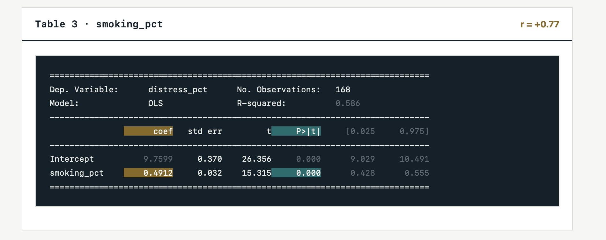

The regression analysis shows a statistically significant relationship between smoking prevalence and mental distress in NYC ZIP codes. The p-value is below 0.05, and the correlation coefficient is +0.77, which indicates a strong positive association.
This means ZIP codes with higher rates of smoking tend to have higher levels of mental distress. In other words, as smoking prevalence increases, mental distress also tends to rise.

What it means for people:
There is a positive relationship between smoking and experiencing mental distress. Communities with fewer resources and reduced access to care may be at greater risk for poor mental health outcomes.
Additional regression findings:
The correlation is +0.47, which is positive and moderate.
For every 1 percentage point increase in diabetes, distress_pct goes up about 0.27 percentage points.
r = .74, b = 0.27, p < .001
The correlation is +0.31, which is positive and slightly moderate.
For every 1 percentage point increase in depression, distress_pct goes up about 0.29 percentage points.
r = .31, b = 0.29, p < .001